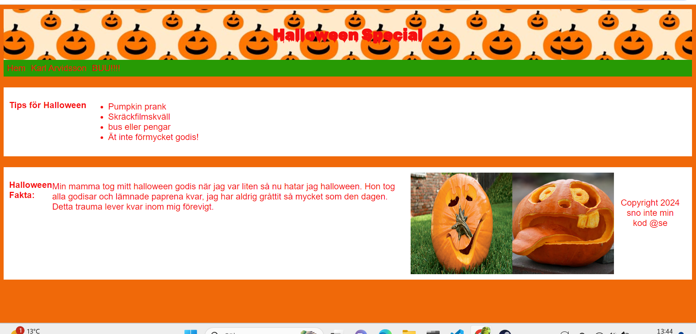
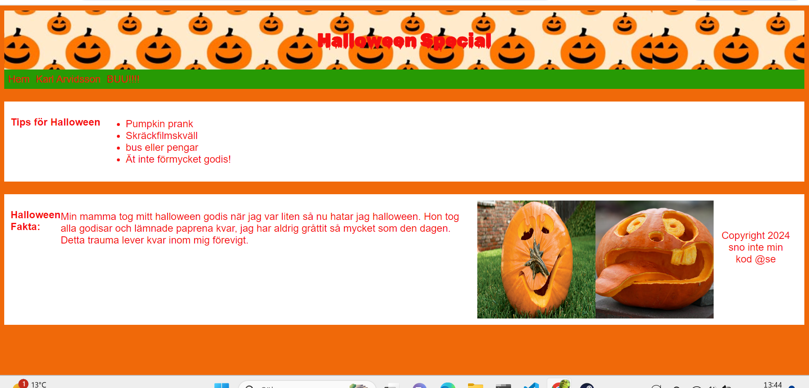
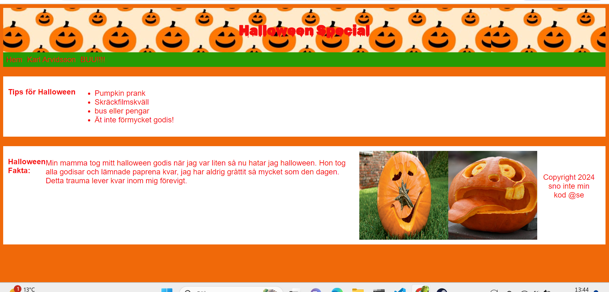
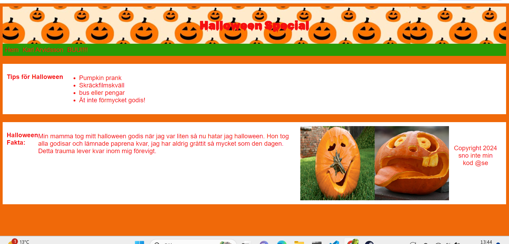
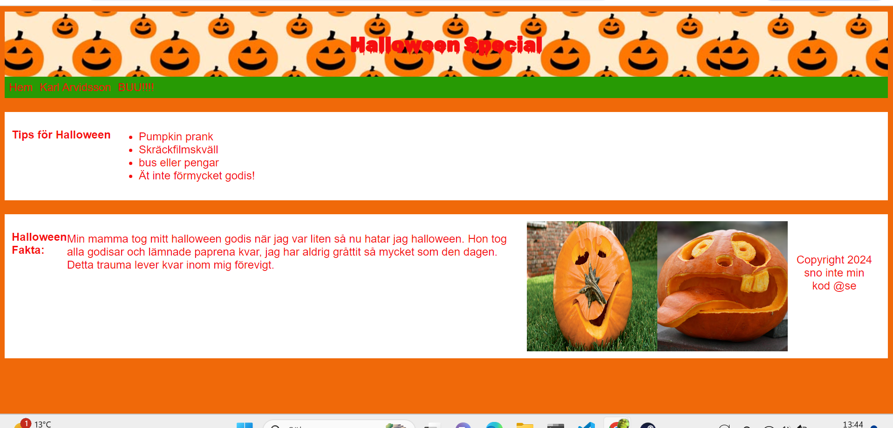

Nft
Home
En NFT-apa med påsktema framställs i en strikt formell stil. Apan bär en svart kavaj med silkeslena slag och en stilfull påsklilja fastsatt vid kragen. Ingen skjorta syns till, vilket framhäver apans gyllene päls som kontrasterar elegant mot kavajen. Hatten är en hög cylinderhatt med en diskret påskäggsdetalj i pastellfärger och en liten fjäder på sidan. I ena handen håller apan en silverkalk fylld med chokladägg, medan den andra vilar på ett polerat träbord. Bakgrunden visar en exklusiv påskmiddagsscen med dämpad belysning och subtila vårdekorationer, vilket ger hela motivet en känsla av påsklig elegans och modern extravagans.
Komentera vad du tycker om konstverket:


 


